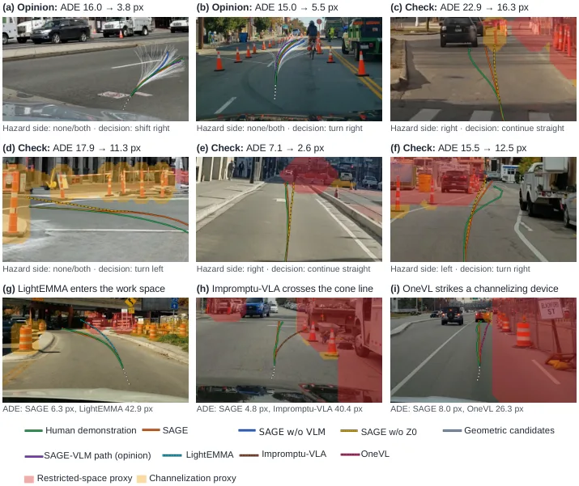
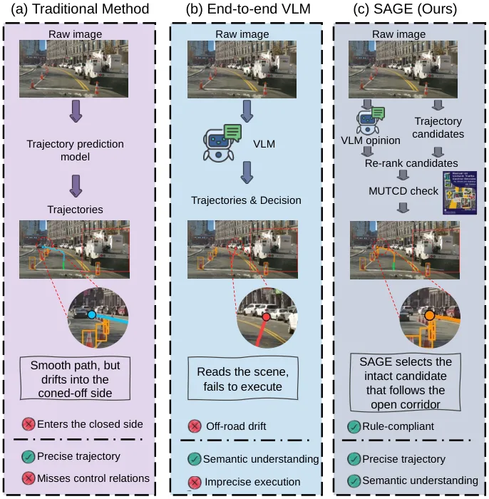
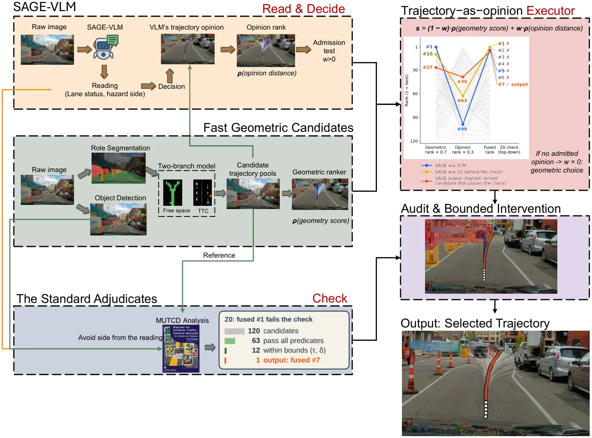
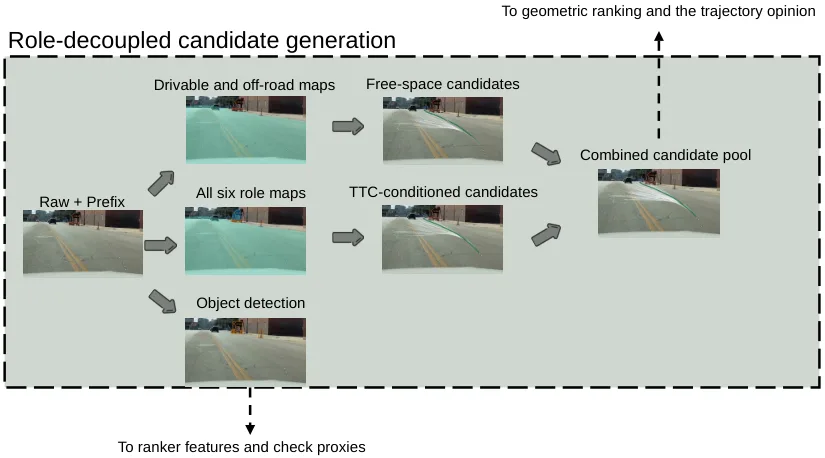
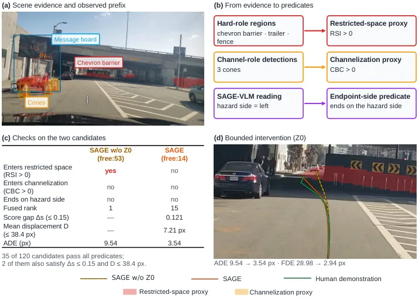
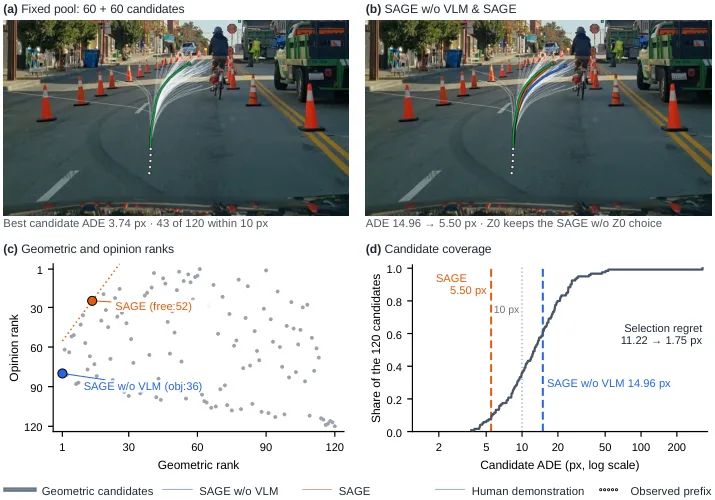

SAGE：临时交通管制下“语义读规则 + 几何出候选”的施工区路径预测
SAGE: A hybrid vision-language and geometry framework for work-zone pathway prediction under temporary traffic control
关键是把“没有好候选”和“选错候选”分开：双分支（free-space / TTC-conditioned）各采 60 个终点解码 15 点路径，共 120 条候选不做剪枝；VLM 先读车道状态与危险侧、再给通行决定与自身轨迹，该轨迹只作为排序偏好；最后用 MUTCD 派生的图像谓词做有界干预（分数与位移都有界），保证任何情况下都有可行输出。误差归因显示 53% 的排序器误差来自选择而非候选缺失，这解释了为什么加一个“偏好器”就能拿到 8.3%/12.0% 的位移改善。
ADE reduction
FDE reduction
hard violations
selection regret
作者、单位与技术谱系 · Research context
作者与单位
研究脉络
- ROADWork 数据集与基准数据与评测基座关系：全部训练与验证 episode 来自 ROADWork，位移与安全指标沿用其协议（并加设备锚定换算）。[论文 §4.1]
- NAVSIM PDM 评分评测组件关系：安全分沿用 NAVSIM 的预测式驾驶员模型评分结构（NC×DAC×CLC×…），并按施工区加了 channelization 项。[论文 §4.2]
- MUTCD 条款领域规则来源关系：危险侧谓词与训练监督结构都按 MUTCD 条款组织，是“规则先验”的来源。[论文 §3 / 摘要]
本篇为单机构署名，未发现公开合作边；network 条目记录的是数据与规则依赖，不是机构合作关系。作者角色取自首页署名与 corresponding 标注。
方法本质拆解 · What actually changed
是不是微调？
是训练一个专用 VLM（SAGE-VLM）并训练 RD-YNet 生成器，不是纯提示工程。前端分割先在 ROADWork 对齐的分割子集上训练后冻结；SAGE-VLM 的监督按 MUTCD 结构组织（先说车道状态与危险侧，再给决定与轨迹）。几何生成器与 VLM 分开训练，推理时各自独立。
有没有额外约束？
约束分两层：训练时用 MUTCD 结构约束 VLM 的输出顺序与内容（先读数后决策）；推理时用由危险侧导出的图像空间谓词做硬检查，违规就被有界干预拉回，干预幅度在分数与位移上都有上界。此外候选池由两个互补分支构成，等于给“方案多样性”加了一个结构性约束。
推理/后端到底做了什么？
推理是四步串行：VLM 读数与决策 → 双分支生成 120 条候选 → rank fusion 打分 → 谓词检查与有界干预。没有在线优化或轨迹后平滑；VLM 不可用时直接回退到几何排序器的选择，保证每个 episode 都有合法路径。
方法本质是什么？
本质是把“语义理解”降级成排序信号，把“安全”升级成不可谈判的硬谓词：VLM 不直接产生轨迹，只影响候选的相对次序；规则谓词不参与打分，只做否决与限幅。这样两部分的错误不会互相放大，也让误差可以归因到“候选缺失”或“选择错误”其中之一。
输入单目前视序列与施工区设施；几何双分支生成 120 条候选、VLM 轨迹作为偏好参与排序、MUTCD 谓词做有界干预；直接效果是位移误差降 8.3%/12.0%、硬违规降 37%。

桥接价值Bridge
桥接价值
它把“几何候选生成”和“语义偏好选择”彻底分开，再用规则化硬约束兜底——这正好是我们多假设几何 + 学习式打分 + 硬约束校验的结构，只是领域换成了施工区。更有价值的是它给出了可量化的失败归因：87% 的 episode 里候选池已经含正确路径，而排序器误差的 53% 来自“选错”，这直接把优化目标从“生成更好的候选”改成“把选择做对”。
方法与模块Method
方法摘要
read：VLM 输出结构化读数（车道状态、危险侧）；decide：同一模型给通行决定与 15 点轨迹；execute：RD-YNet 双分支（free-space 用 drivable/off-road 图，TTC-conditioned 用全部六类角色图）各从目标热图采 60 个终点、解码 60 条路径，合并成 120 条候选池；check：rank fusion 融合几何代价与 VLM 轨迹一致性，再用由危险侧导出的图像空间谓词做有界干预（分数与位移都设上界）。前端分割是冻结的六类角色（void/drivable/off-road/hard/channel/guidance）。
可迁移模块
第一是“候选池不剪枝”：两分支各保留 60 条，确保任一分支不能提前淘汰另一分支的方案，代价只是排序开销。第二是“VLM 只做排序不做控制”：把语言模型的输出当偏好分数，而不是直接当轨迹，降低了它的错误代价。第三是“规则谓词 + 有界干预”：无论模型是否可用，都有一个满足硬约束的兜底输出，这对任何安全相关系统都是必要的降级路径。

证据Evidence
关键证据与数字
2,306 个 ROADWork 验证 episode（共 2,313，其中 7 个无有效 VLM 输出）；候选池在 87% 的 episode 里含一条距人类示范 10 px 内的路径，排序器误差中 53% 归因于选择。相对几何 ranker，SAGE 的 ADE 降 8.3%、FDE 降 12.0%，硬约束违规率降 37%；VLM 轨迹意见对四组 generator–selector 组合全部有提升；在 137 个安全关键帧（135 个有有效 VLM 输出）上单独报告违规率与安全分（具体数值见论文图 5，本次未逐项抄录，待核验）。
边界与下一步Limits & Next Step
边界与风险
领域绑定很强：谓词直接来自 MUTCD 条款，换国家或换规则体系需要重写检查器；观测只有 5 帧历史 + 15 点未来，工作分辨率 448×256。论文没有报告推理时延，“比 OneVL 的 VLM 响应更快”是相对比较，不等于实时。数据集没有逐帧标定，位移用 MUTCD 锥桶高度做单目锚定，尺度精度受物体高度假设限制；分母 2,306 与 2,313 的差异（无效 VLM 输出）也提示可用性并非 100%。
下一步实验
把它的“regret 分解”搬到我们的多假设位姿/地图选择上：对同一段序列生成 N 个候选（不同初始化/不同外点集），统计“最优候选是否在池内”与“最终选了第几名”，先确定瓶颈在候选生成还是打分。若 regret 主要来自选择，就优先做打分器（例如用一致性残差做特征）而不是增加假设数；反之再扩候选池。







